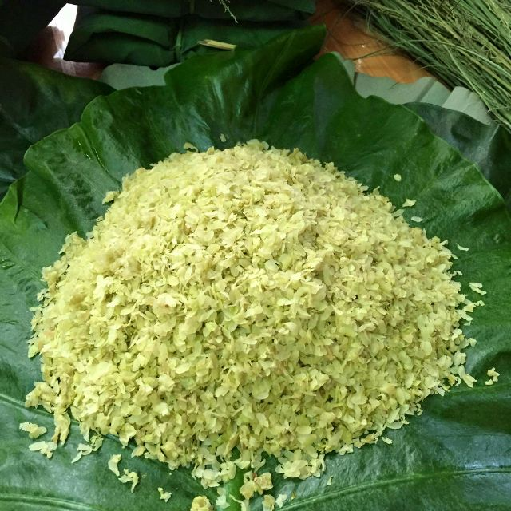
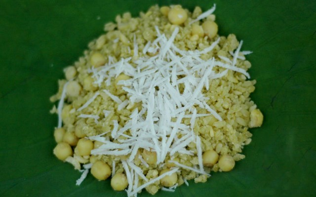
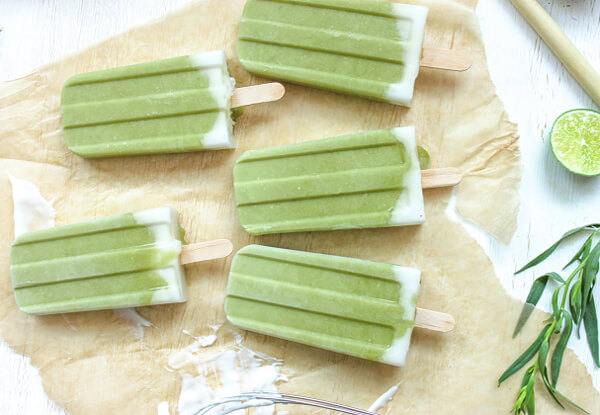

Dùng cốm tươi làm món gì, cốm tươi có thể chế biến thành nhiều món ăn khác nhau như chả cốm, chè cốm, xôi cốm, bánh cốm, kem cốm… Với mỗi món ăn, hạt cốm lại cho một hương vị độc đáo riêng.
Tùy vào tay nghề người làm, hạt cốm cũng cho những vị khác nhau. Hạt lúa phải chín đủ độ, bởi nếu nếp non quá hạt cốm sẽ bị vỡ, không đủ độ ngọt.
Nếu hạt nếp già quá, cốm sẽ bị khô, cứng và không dẻo.

Sau đây, chúng ta sẽ cùng tìm hiểu công thức cốm tươi làm món gì ngon với món xôi cốm.
Chắc hẳn, với nhiều người xôi cốm đã trở thành món ăn quen thuộc mỗi sáng.
Tuy nhiên không phải ai cũng biết cách làm xôi cốm thơm ngon, tròn vị.
Nguyên liệu làm xôi cốm:
200gr cốm tươi
100gr hạt sen tươi
100gr đậu xanh đã cà vỏ
20gr dừa nạo
Muối, dầu ăn, đường cát
Cách làm:
Bước 1:
Hạt sen rửa sạch, ninh cho chín nhừ cùng ¼ muỗng cà phê muối.
Sau đó, vớt ra để ráo nước rồi xào hạt sen với một muỗng cà phê đường cho sen có vị hơi ngọt.
Bước 2:
Đậu xanh rửa sạch, hấp chín cùng ¼ muỗng cà phê muối, giã nhuyễn rồi nắm thành nắm tròn to. Dừa nạo ngâm đường trong 30 phút, sau đó vớt ra để ráo nước.
Rồi xào lửa nhỏ cho tới khi sợi dừa trong.
Bước 3:
Cốm tươi đem bỏ ra một chiếc chảo hoặc mâm rộng.
Nếu dùng cốm khô (cốm đông lạnh) thì cần vẩy một chút nước vào cốm để cốm mềm ra.
Bước 4:
Cắt nắm đậu xanh thành từng lát mỏng rồi trộn với cốm.
Tiếp tục trộn hạt sen với đậu xanh và cốm cho đến khi đều.
Bước 5:
Đun nước sôi, cho hỗn hợp vừa trộn vào nồi đồ cho đến khi cốm chín mềm.
Đổ xôi ra mâm, trộn thêm 2 muỗng cà phê đường hoặc nhiều hơn, tùy vào khẩu vị mỗi người cho vừa ăn.
Xới xôi cốm ra đĩa, rắc dừa nạo lên là có thể ăn ngay.

Như vậy là bạn đã hoàn thành món xôi cốm cho công thức cốm tươi nấu gì ngon.
Cùng tiếp tục làm món ngon với cốm đó là kem cốm.
Cốm tươi làm món gì ngon-kem cốm tươi mát
Kem cốm là một trong những món ăn không thể bỏ qua trong những ngày hè nóng bức.
Nguyên liệu để làm kem cốm rất đơn giản và dễ tìm.
Khi ăn, kem cốm dẻo mịn, mát lạnh, có vị ngọt, beo béo của sữa tươi và kem tươi, chắc chắn sẽ giúp bạn thỏa mãn cơn nóng.
Nguyên Liệu:
250ml kem tươi
250ml sữa tươi
100gr đường
50gr cốm tươi
50gr cơm dừa tươi
5-7 lá dứa
1 lòng đỏ trứng gà
½ muỗng cà phê muối
Cách Làm
Bước 1:
Đun sữa tươi với 2 muỗng đường và 5gr muối cho đến khi sôi.
Bước 2:
Trộn cốm vào sữa nóng, ngâm cho mềm. Sau đó, đem xay hạt cốm và cơm dừa non.
Rồi đem hỗn hợp này để nguội.
Bước 3:
Đánh bông lòng đỏ trứng với đường. Rồi trộn hỗn hợp này với cốm sữa dừa đã xay trước đó.
Sau đó đem hỗn hợp này đun sôi nhẹ.
Bước 4:
Thái nhỏ lá nếp, đem xay rồi lọc lấy nước cốt.
Đổ nước cốt lá nếp vào hỗn hợp kem đang đun. Vừa đun, vừa khuấy đều để không bị cháy.
Bước 5:
Đánh bông nhẹ kem tươi, trộn cùng hỗn hợp kem đang đun.
Để nguội hỗn hợp rồi đổ vào khuôn, đem đông lạnh ở ngăn đá tủ lạnh.

Vậy là bạn đã hoàn thành món kem cốm thơm ngon, mát lạnh trong công thức cốm tươi làm món gì ngon rồi.
Nhanh tay vào bếp và cùng làm những món ăn ngon với cốm đãi cả nhà nào.